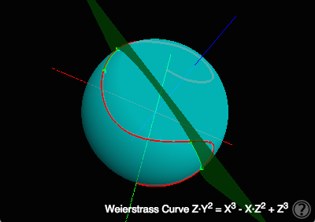
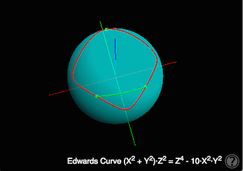
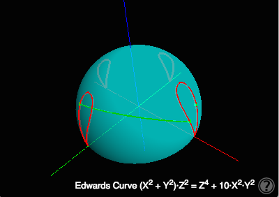

A 3D visualization of group operations constituting elliptic curve cryptography schemes written by Wolfgang Glas / ITEG IT-Engineers GmbH licensed under the Apache License, Version 2.0.
Github Project URL https://github.com/wglas85/math, feel free to add new curves, improve the visual appearance or give any other sort of feedback.
Click through the examples below and read more instructions by pressing the help button in the lower-right corner of the canvas. You might try to use Ctrl-Click/⌘-Click or a long touch on the curves for selecting the operands of the group operation.


